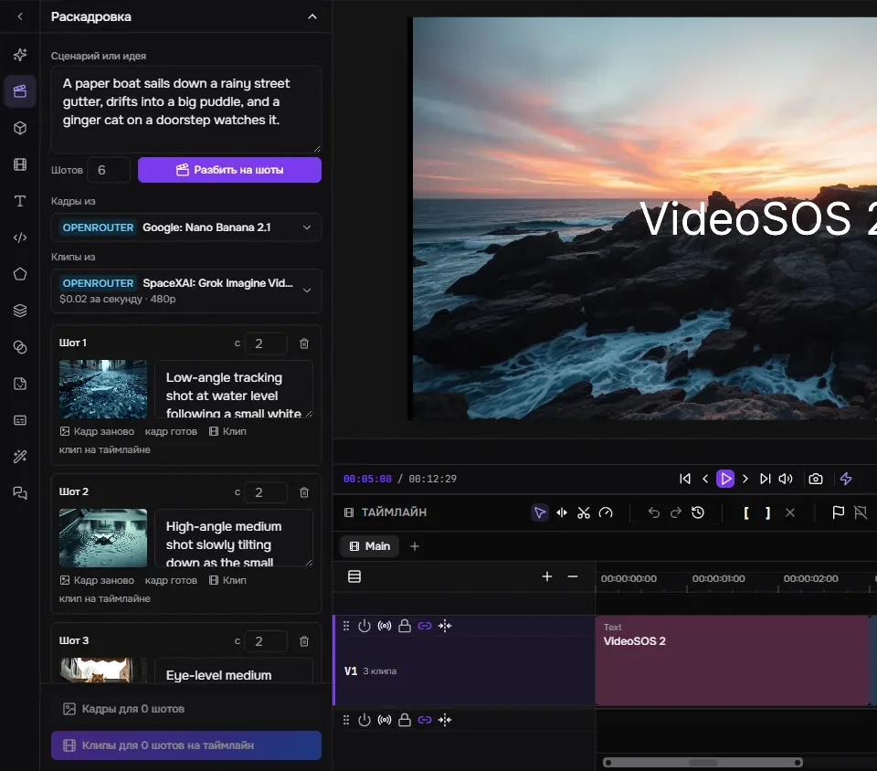
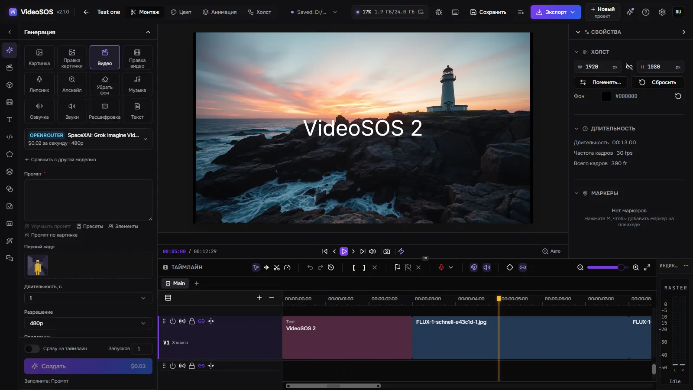
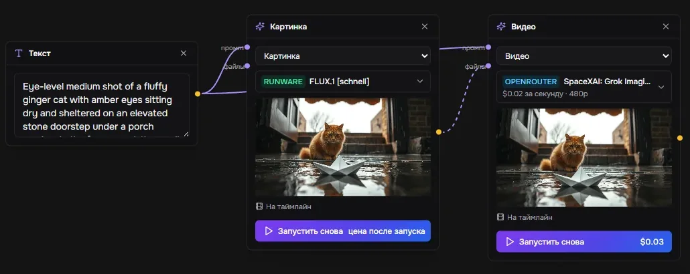
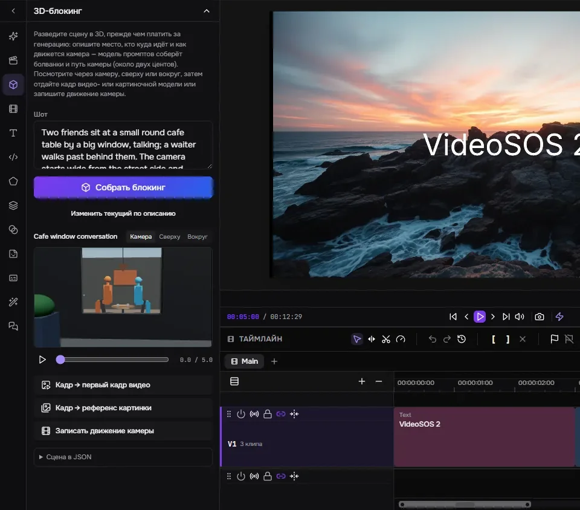
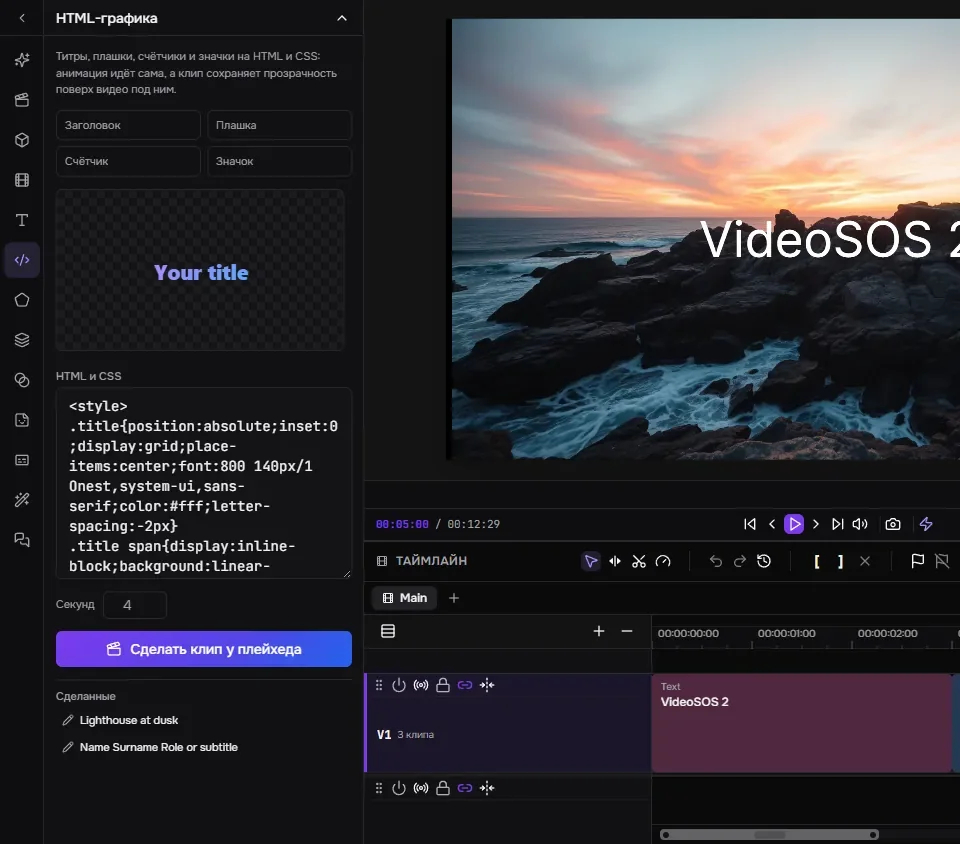
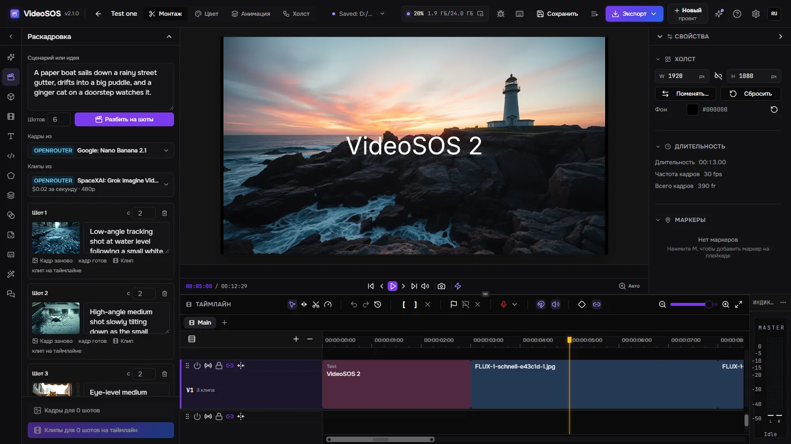
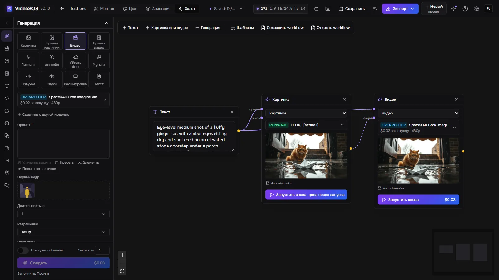
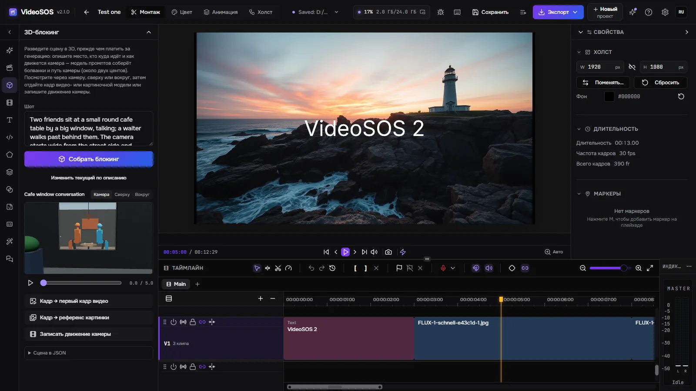
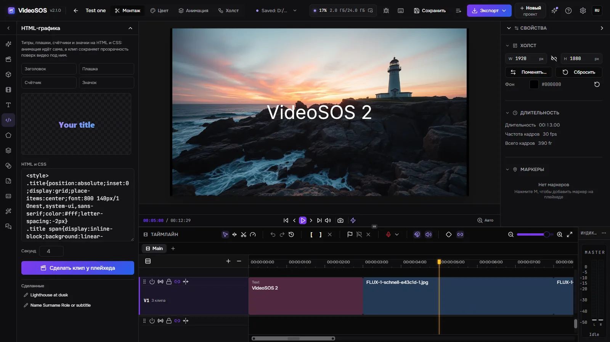

Раскадровка

Языковая модель делит сценарий на шоты; каждому шоту картиночная модель делает кадр, а видеомодель — клип с этого кадра, и клипы встают на таймлайн один за другим.
VideoSOS ставит лучшие модели картинок, видео, музыки и голоса OpenRouter, fal и Runware рядом с настоящим многодорожечным редактором. Спланируйте фильм на раскадровке, узловом холсте и в 3D-блокинге, сгенерируйте каждый шот своими ключами по цене, видной до запуска, и смонтируйте готовый ролик — или поручите это ИИ-агенту вместе с вами.
Windows 10/11, Linux (экспериментально) и macOS на Apple Silicon (экспериментально). Видеокарта с WebGPU для превью и экспорта. Для генерации нужен ключ OpenRouter, fal или Runware — вы платите им напрямую. Картинки и видео со звуком можно делать и бесплатно на своей видеокарте (Windows).

Генерация, планирование и монтаж в одной программе, а файлы — на вашем диске.

Языковая модель делит сценарий на шоты; каждому шоту картиночная модель делает кадр, а видеомодель — клип с этого кадра, и клипы встают на таймлайн один за другим.

Текст, картинки, видео и генерации — узлы, связанные тем, что передают.

Опишите шот — языковая модель соберёт его из болванок, стоящих и сидящих людей, их перемещений и пути камеры.

Титры, плашки, счётчики и значки на HTML и CSS с живым превью, превращённые в клип с прозрачностью поверх видео у плейхеда.
Двенадцать задач: картинки, правки, видео из текста или кадра, правка видео, липсинк, апскейл, удаление фона, музыка, голоса, звуки, расшифровка и тексты — больше тысячи моделей OpenRouter, fal и Runware, прочитанных у провайдеров вживую.
Форма строится по описанию самой модели, и цена считается по ней до нажатия «Создать»; после запуска записывается счёт самого провайдера. Дневной лимит сдерживает агентов.
Тот же промпт уходит ещё в одну-две модели, и результаты стоят рядом со своими ценами.
Персонаж, предмет или место под именем со своими картинками: @имя в промпте отправляет их модели, и то же лицо возвращается из шота в шот.
Запуск рисуется на таймлайне там, где ляжет, пока идёт; часть любого клипа генерируется заново на месте; следующий клип продолжает последний кадр предыдущего.
Много видео- и аудиодорожек, подрезка ripple, rolling, slip и slide, переходы, ключевые кадры с графиком Безье, маски, режимы наложения, цветокоррекция со скопами, текст, фигуры и субтитры. Быстрый экспорт в MP4, WebM, MOV или MKV на видеокарте или FCPXML для Final Cut, DaVinci Resolve и Premiere.
Подключите Claude Code, Claude Desktop, Cursor или Codex — агент делает то же, что окно: выбирает модели, считает цену, генерирует, правит таймлайн шаг за шагом, разводит шоты в 3D, делает графику и экспортирует. Таймлайн сохраняется перед каждой правкой агента, правку можно сначала отрепетировать, а каждую можно принимать самому.
Выбранная модель OpenRouter работает в программе теми же инструментами — шаг за шагом, с ценой каждого шага и кнопкой «Стоп».
Ссылка YouTube, любого сайта, который знает yt-dlp, или прямая ссылка на файл попадает в медиатеку с прогрессом, отменой и докачкой.
Никакого нашего аккаунта: вы платите провайдерам напрямую. Проекты и генерации — обычные файлы на вашем диске; задача сохраняется до отправки и не оплачивается дважды, а результаты скачиваются, пока ссылки провайдеров живы.
Английский, русский, немецкий, испанский, французский, японский, корейский, бразильский португальский, турецкий и китайский — вместе с эффектами и их параметрами.
Прокси для провайдеров и загрузок и доступ из сети: браузер на другом компьютере или телефоне открывает тот же интерфейс по ключу доступа, а всё работает здесь.
Qwen-Image 2.1 для картинок, MiniMax-H3 и LTX-2.5 для видео со звуком работают на этом компьютере через stable-diffusion.cpp (CUDA, Vulkan или процессор), в квантах и с пресетами ускорения — без ключа и без счёта. Файлы, которые уже есть у другой программы автора, берутся у неё, а не скачиваются.
Пока открыта YuE2 Studio, MiniMax Music3 Studio или ACE-Step Studio, она появляется в «Музыке» со своей формой; песню делает сама студия, а файл попадает в медиатеку.
Пока открыта Speech Studio, каждый её движок на этом компьютере — Qwen3-TTS, Supertonic 3, Drama 3, Higgs Audio — появляется в «Озвучке» с голосами и языками; текст озвучивает студия, а файл попадает в медиатеку.
Сама программа, на вашем языке.




Да. VideoSOS бесплатный и с открытым кодом (MIT). Генерация оплачивается провайдерам вашими ключами; монтаж и экспорт ничего не стоят.
У нас — нет. Нужен ключ хотя бы одного провайдера — OpenRouter, fal или Runware, — и вы платите ему напрямую; VideoSOS не видит ваших денег и никогда не показывает ключи агентам.
Зависит от модели: форма генерации показывает цену перед каждым запуском — от долей цента за быструю картинку до долларов за длинное видео, а история хранит, сколько стоил каждый запуск. Раскадровка утверждает дешёвые кадры до платных клипов.
Только то, что нужно генерации, уходит выбранному вами провайдеру. Проекты, медиа и результаты остаются на вашем диске; анонимная статистика выключена, пока вы её не включите, и никогда не содержит промптов, файлов или ключей.
Windows 10 и 11 x64; Linux x86-64 и macOS на Apple Silicon — экспериментальные сборки. Видеокарта с WebGPU работает на превью и экспорт.
Подключите Claude Code, Claude Desktop, Cursor или Codex — агент делает то же, что окно: выбирает модели, считает цену, генерирует, правит таймлайн шаг за шагом, разводит шоты в 3D, делает графику и экспортирует. Таймлайн сохраняется перед каждой правкой агента, правку можно сначала отрепетировать, а каждую можно принимать самому.
claude mcp add --transport http videosos http://127.0.0.1:8796/mcp
Оболочка Tauri запускает сервер на Rust в том же процессе; окно — форк редактора FreeCut с добавленными панелью генерации, раскадровкой, холстом, 3D-блокингом и мостом агента. Задачи хранятся в SQLite, файлы — на вашем диске.
React window (FreeCut fork) ─┐
├─ VideoSOS.exe (Tauri shell + Rust/axum server inside)
Rust axum server ────────────┘ │
├─ OpenRouter · fal · Runware (your keys)
└─ MCP http://127.0.0.1:8796/mcp